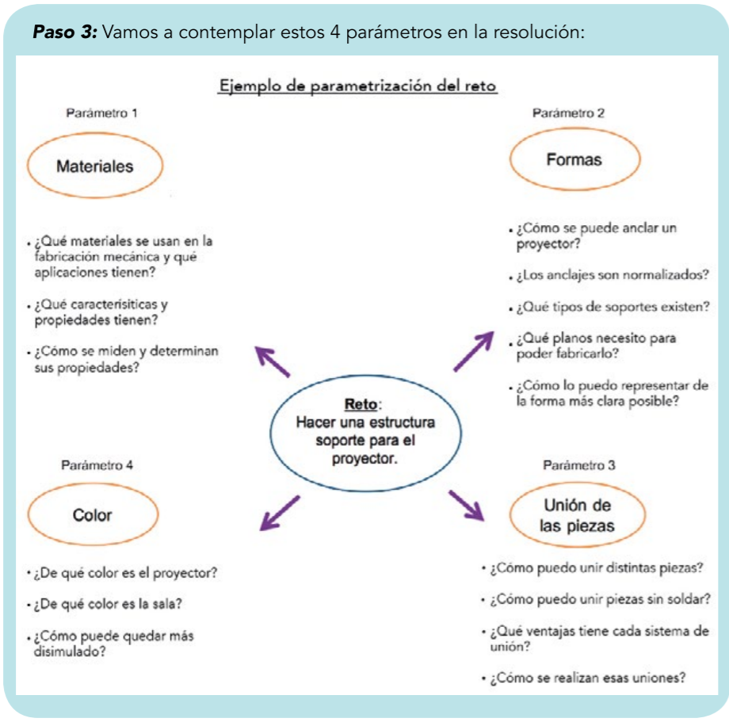

Definir
Una vez identificado, el alumnado tiene que resolverlo por partes, buscando conocimiento y resolver las partes.
Paso 3.- Establecer parámetros. Tiene la finalidad de descomponer el reto en problemas más pequeños y por tanto, más fáciles de abordar.
Este paso de parametrizar se realiza con toda la clase, para que todo el mundo tenga en cuenta que aspectos hay que tener en cuenta. Este proceso tiene que ser guiado por el profesorado.

Paso 4. Obtener y organizar la información. A través de las actividades planteadas para la resolución del reto, el alumno busca, sintetiza la información y/o practica procedimientos y habilidades. En nuestro ejemplo buscará los tipos de uniones sin soldadura, los clasificará, fijará sus características y aplicaciones y realizará varias pruebas de distintos tipos de unión, siguiendo los procedimientos investigados para después analizar los resultados.
Paso 5.- Generar alternativas (de solución) El alumnado creará alternativas de solución teniendo en cuenta la información que ha trabajado en el paso anterior y puede confeccionar una lista como la siguiente:
- Soporte anclado al techo con sus piezas atornilladas y pintado de forma que se disimule con el techo.
- Soporte en el techo, con sus piezas pegadas y disimulado con una mampara.
- Soporte en el techo con un mecanismo que se oculte en el falso techo.
- Soporte fijado al suelo del salón de actos y protegido por una estructura.
- Soporte que se esconde dentro del escenario con un mecanismo “x”.
- Un soporte móvil que permita proyectar en 3 de las 4 paredes del salón de actos.
- Como el soporte anterior pero que puede albergar varios proyectores que pueden funcionar en varias paredes a la vez.
- ………………………………..
- ……………………………….
- ……………………………
En estos pasos 3,4 y 5 considera todos Resultados de Aprendizaje RA que pretendas que el alumno adquiera. Es necesario guiar al alumno para coseguirlos. El objetivo es mantenerlos activos y si es posible en equipo, tu reto es cómo involucar al equipo.
Photo by Pedro Miranda on Unsplash